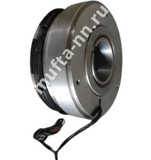

Электромагнитные муфты серии ЭТМ со склада в Нижнем Новгороде
| Электромуфты ЭТМ-..2 от ЭТМ-052 до ЭТМ-142 |
Электромуфты ЭТМ-..4 от ЭТМ-054 до ЭТМ-144  |
Электромуфты ЭТМ-..6 от ЭТМ-056 до ЭТМ-146 |
Электромуфты ЭМ от ЭМ-12 до ЭМ-62 |
Щеткодержатели серии ЭМЩ-2А |
Масляные электромагнитные муфты серии ЭТМ и ЭМ. Общая информация.
Электромагнитные муфты серии ЭТМ представляют собой устройства, обеспечивающие передачу вращения между ведущим и ведомым валами приводного механизма. Муфты ЭТМ применяются в отечественном станкостроении, но данная область применения не является единственной. При соблюдении условий нормального функционирования, муфты серии ЭТМ выполняют возложенную на них задачу и в смежных отраслях отечественной промышленности.
Электромагнитные муфты ЭТМ образованы двумя составными узлами: электромагнитом и, приводимым им в движение, фрикционным пакетом. Фрикционный пакет состоит из комплекта магнитопроводящих фрикционных дисков: внутренние диски закрепляются на ведущем валу, наружные, через соединительную часть приводного механизма - корзину или поводок, закрепляются к ведомому валу (ведомой детали).
При выключенной муфте, внутренние фрикционные диски вращаются вместе с ведущим валом приводного механизма, в котором используется муфта, наружные диски, вместе в ведомым валом, находятся в неподвижном состоянии. При включении муфты, электромагнит сжимает фрикционный пакет, прижимая внутренние фрикционные диски к наружным, вследствии чего между ними возникает сцепление и наружные диски начинают вращаться вместе со внутренними, приводя в движение ведомый вал (ведомую деталь). Расцепление фрикционного пакета, при отключении муфты, обеспечивается специальной волнообразной формой внутренних дисков.
Электромагнитные муфты подразделяются на следующие типы:
- Контактные муфты ЭТМ. Выводы электромагнитной катушки муфты данного типа закреплены один к корпусу, второй к токосъемному кольцу. Подача электрического тока на катушку происходит через непосредственный контакт внешней щетки, закрепленной в неподвижном щеткодержателе, с токосъемным кольцом муфты. К данному типу относятся следующие муфты: ЭТМ052, ЭТМ062, ЭТМ072, ЭТМ082, ЭТМ092, ЭТМ102, ЭТМ112, ЭТМ122, ЭТМ132, ЭТМ142.
- Бесконтактные муфты ЭТМ. Подача электрического тока, на электромагнитную катушку муфты данного типа, осуществляется по проводам, выведенным наружу через специальное отверстие в корпусе катушкодержателя. К данному типу относятся следующие муфты: ЭТМ054, ЭТМ064, ЭТМ074, ЭТМ084, ЭТМ094, ЭТМ104, ЭТМ114, ЭТМ124, ЭТМ134, ЭТМ144.
- Тормозные муфты ЭТМ. При включении данной муфты, за счет зацепления наружных фрикционых дисков с неподвижным поводком, происходит остановка и удержание ведущего вала приводного механизма. Подача электрического тока на катушку муфты происходит по проводам, выведеным наружу из корпуса муфты. К данному типу относятся следующие муфты: ЭТМ056, ЭТМ066, ЭТМ076, ЭТМ086, ЭТМ096, ЭТМ106, ЭТМ116, ЭТМ126, ЭТМ136, ЭТМ146.
В отдельный вид выделены электромагнитные муфты серии ЭМ. Данные муфты выполняют ту же функцию, что и муфты серии ЭТМ, так-же могут быть контактными, бесконтактными и тормозными, но в отличии от "цельных" муфт ЭТМ, муфты серии ЭМ являются "составными": все элементы отделены друг от друга и собираются, при монтаже, непосредственно на валу приводного механизма. К данному типу относятся следующие муфты: ЭМ12, ЭМ22, ЭМ32, ЭМ32АР, ЭМ42, ЭМ42АР, ЭМ42АР1, ЭМ42АР2 ЭМ52, ЭМ62.
Все муфты, описываемые на данном сайте, являются МАСЛЯНЫМИ. То есть данные муфты рассчитаны на эксплуатацию в условиях, обеспечивающих постоянную смазку фрикционного пакета минеральным маслом. Подача масла, к электромагнитной муфте, осуществляется по каналам вала или поливом. При особо легких тепловых режимах допускается погружение части муфты в емкость с маслом.